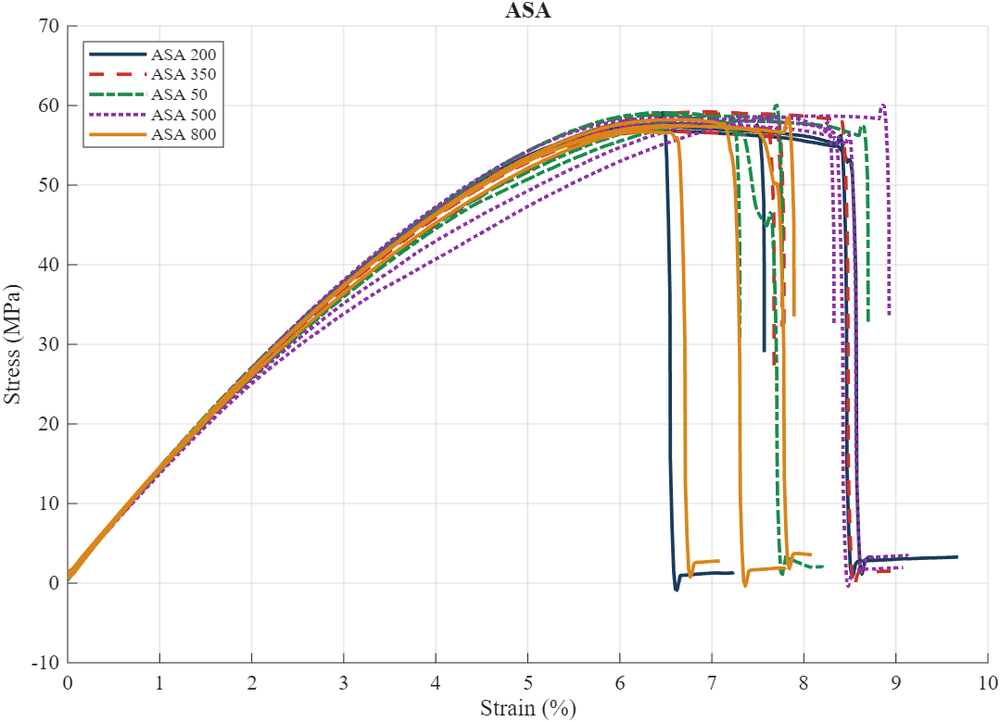
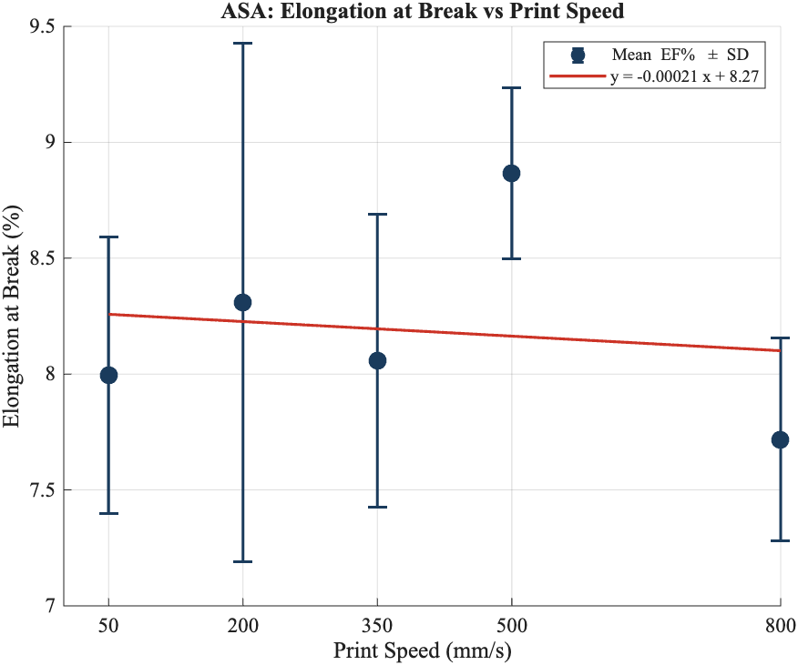
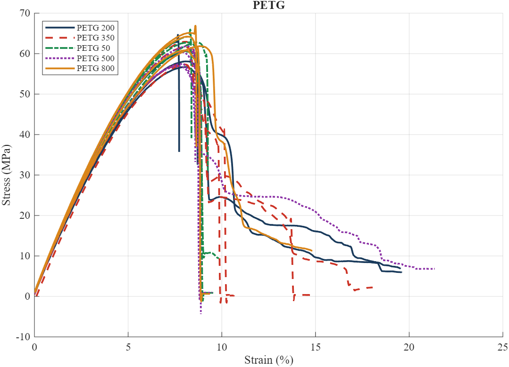
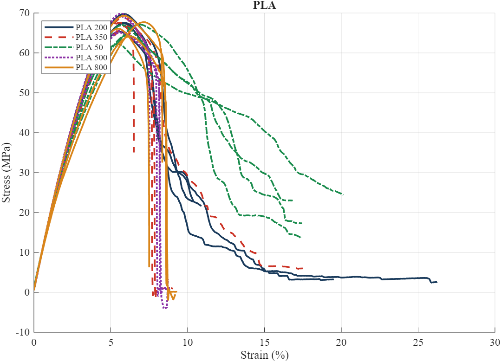
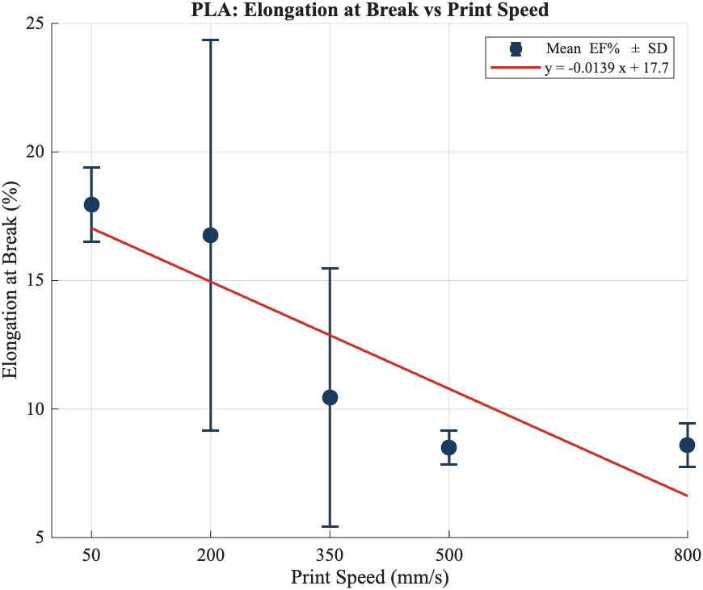
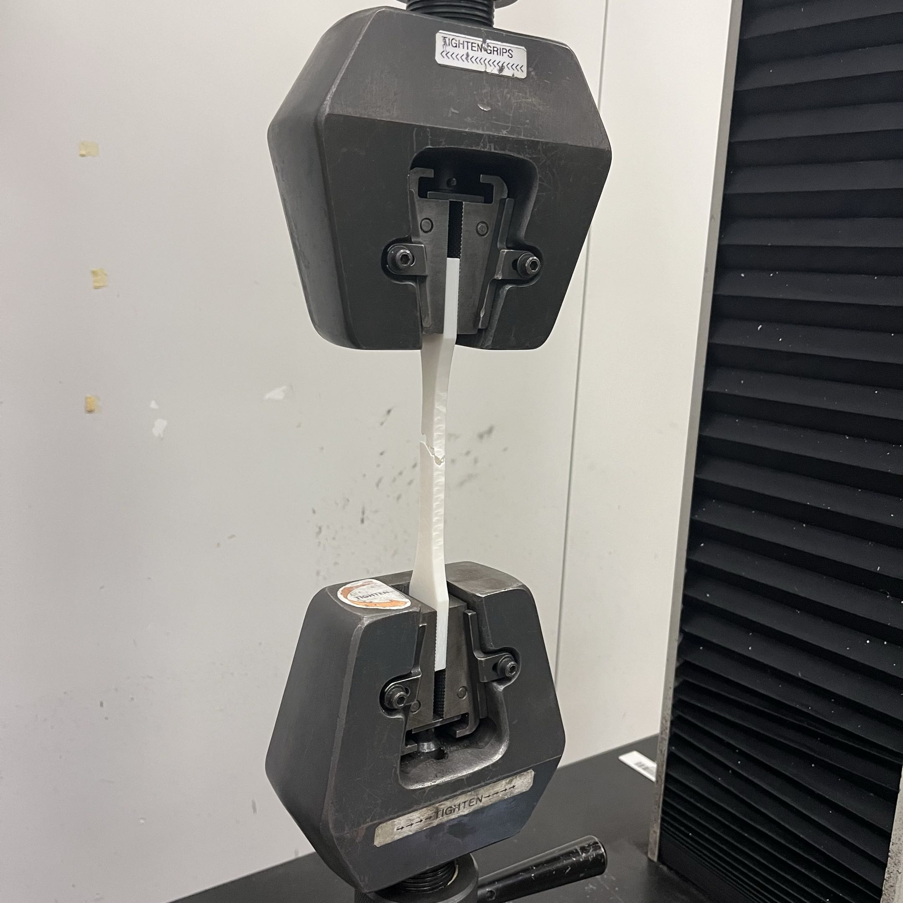

04
Images

FIG.0405.A

FIG.0505.B

FIG.0605.C

FIG.0705.D

FIG.0805.E

FIG.0805.E

We investigated how print speed affects the tensile properties of PLA, PETG, and ASA 3D-printed materials. Using ASTM D638 dog-bone specimens, we tested five internal print speeds from 50 to 800 mm/s and evaluated how material and print speed affected strength and ductility. In total, we fabricated and tested 60 specimens using a Bambu P1S and an Instron universal testing machine.
We used a full factorial design with three filament materials and five print speeds, producing 15 unique conditions with four specimens per condition. Print speed was varied while other slicer parameters, including outer wall speed, surface speed, infill density, infill pattern, and layer height, were held constant. Before testing, each specimen was dimensionally measured and the Instron load cell was calibrated using known loads to reduce systematic measurement error.
We performed uniaxial tensile testing at a constant crosshead speed of 6 mm/min and recorded force and displacement continuously until fracture. The data was corrected using the load cell calibration and converted into engineering stress and strain. We then compared ultimate tensile strength and ductility across materials and print speeds using stress-strain curves, two-way ANOVA, and statistical hypothesis testing.
Material had a statistically significant effect on both ultimate tensile strength and ductility, while print speed alone did not show a statistically significant effect. However, the interaction between material and print speed was significant for both properties, indicating that different materials responded differently to changes in print speed. A follow-up analysis found a significant decrease in PLA ductility between 50 and 800 mm/s, while the same trend was not statistically significant for PETG or ASA. Overall, the results showed that print speed cannot be evaluated independently of filament material and that PLA was the most sensitive to changes in printing speed in our testing.




